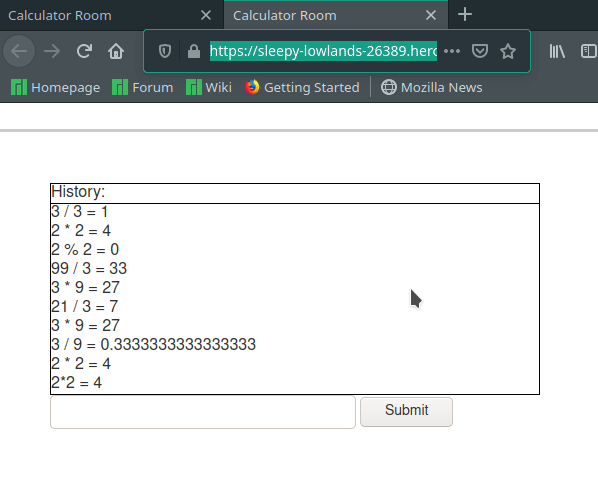

|
|
Tswjfwmeng (ChuFu) Vangtswjfwmeng@gmail.com |
Hello and Welcome!Thank you for visiting my personal website. My name is Tswjfwmeng Vang, but you can call me ChuFu. I graduated from the University of Wisconsin-Green Bay in 2020 with a B.S. in Computer Science with an emphasis in Software Engineering. I'm currently looking for a full-time software engineering position and am willing to relocate. |
About MeA few hobbies that I like are cars/driving, Breaking, and hiking/exploring. All of my hobbies are always more enjoyable with my wife and daughter, so I try to bring them along whenever I can! I own a 5 speed 2005 Subaru Forester XT, which is the turbo variant. Since I recently just graduated, I hope to do more to the car and take it off-roading and camping more often. My Breaking experience started sometime in high school. Dancing is something that I've always had a connection with, but Breaking taught me structure and what culture means to its people. I've learned a lot of my morals from Breaking and the people in it. |
Projects |
Calculator Room (GoLang, JavaScript, HTML & CSS)https://github.com/mylink229/calculator_room |
|
 |
|
Calculator Room was a weekend project that was inspired by a chat room service project that I had worked on for school. Calculator Room uses websockets and asynchronous functions for updating all clients when a new message is sent. The server sends and receives JSON objects and also stores each message in a JSON object that enacts as the "history" of the messages. |